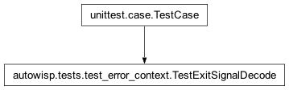
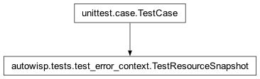

autowisp.tests.test_error_context module
Class Inheritance Diagram

Unit tests for the ambient error context and capture layer.
The in-process tests need no pipeline fixtures or database; the
cross-process tests spin up a real multiprocessing.Pool (through
run_pool) and let its worker bootstrap with the real
setup_process_map, which initialises a throwaway project home in a
temporary directory. Each test starts from a clean ambient context (reset
in setUp).
- class autowisp.tests.test_error_context.TestAmbientAccessors(methodName='runTest')[source]
Bases:
_ContextTestCaseget/set helpers and in_worker().
- class autowisp.tests.test_error_context.TestCaptureErrors(methodName='runTest')[source]
Bases:
_ContextTestCaseThe capture_errors decorator stamps + optionally wraps.
- test_bare_value_error_wrapped_to_step_subclass()[source]
A bare ValueError becomes the ambient step’s StepError type.
- test_existing_autowisp_error_passes_through_stamped()[source]
An AutoWISPError keeps its type and gets stamped from context.
- test_no_run_leaves_pipeline_run_none()[source]
With no run in context, pipeline_run/crashed stay unset.
- test_preset_step_name_not_overwritten()[source]
A step name set at the raise site survives stamping.
- class autowisp.tests.test_error_context.TestErrorContextDataclass(methodName='runTest')[source]
Bases:
_ContextTestCaseThe ErrorContext bundle itself.
- class autowisp.tests.test_error_context.TestErrorContextManager(methodName='runTest')[source]
Bases:
_ContextTestCaseThe error_context() scoping context manager.
- test_keeps_pipeline_run_and_worker_flag()[source]
The block inherits run + in_worker from the current context.
- class autowisp.tests.test_error_context.TestExitSignalDecode(methodName='runTest')[source]
Bases:
TestCase
decode_exit_signals is portable and drops clean/running exits.
- class autowisp.tests.test_error_context.TestFromConfig(methodName='runTest')[source]
Bases:
_ContextTestCaseErrorContext.from_config rebuilds context from a config dict.
- class autowisp.tests.test_error_context.TestNestingGuard(methodName='runTest')[source]
Bases:
_ContextTestCaseA worker may not launch nested workers (resource control).
- test_forbid_nested_workers_only_inside_worker()[source]
The guard is a no-op in the main process, raises in a worker.
- test_nested_run_pool_blocked_end_to_end()[source]
A real worker that calls run_pool is refused, not allowed to nest.
Goes through the full chain: the outer
run_poolspawns a real worker viasetup_process_map(which setsin_worker), the worker callsrun_poolagain, and the inner guard raises aPipelineErrorthat propagates back stamped with the worker PID – so an accidental N^2 launch fails loudly instead of spawning.
- class autowisp.tests.test_error_context.TestPoolPropagation(methodName='runTest')[source]
Bases:
_ContextTestCaseErrors raised in real Pool workers cross back stamped.
- test_bare_exception_wrapped_to_mapped_step_error()[source]
A worker’s bare exception returns as the step’s StepError subclass.
The worker raises a plain
ValueError;_wrapmaps the ambient step name to its concrete subclass, so the parent receives aMeasurePhotometryError. The original is not kept as a live__cause__across the Pool (our pickling carries only the fields, and multiprocessing replaces__cause__with itsRemoteTraceback); the durable record is the formatted traceback indetails.
- test_faulthandler_dumps_native_traceback()[source]
A segfaulting worker leaves a native dump in its own log.
Proves the
faulthandlerarmed insetup_process_mapturns an otherwise-silent SIGSEGV into a collectable C-level traceback – which is what distinguishes the faulted worker from the innocents the executor merely terminates.
- test_step_error_propagates_with_context()[source]
A worker StepError returns same-typed, stamped, with traceback.
Exercises the full
run_poolround trip: the worker bootstraps its context fromconfig(via the realsetup_process_map), raises aFindStarsError, and the parent receives the same type carrying the worker’ssubprocess_id(a different PID), the step name and pipeline-run snapshot rebuilt in the worker, and the worker traceback both indetailsand as the Pool’sRemoteTracebackcause.
- test_worker_crashed_carries_scoped_config()[source]
A crash carries the failing step’s config, scoped by the manager.
The parent’s own context holds the base
add_images_to_dbconfig, so the failing step’s config must come from theerror_context(config=...)the manager scopes at dispatch (here simulated aroundrun_pool) – not from the parent context.
- test_worker_crashed_carries_step_name()[source]
The synthesised WorkerCrashedError records the ambient step.
Regression for the “no matching logs found” crash-report gap: the step name must reach the queryable
step_nameattribute (which the persistence layer writes toerror.step_nameand crash-report log-collection resolves the run/step logs from), not only the free-text message. The parent stamps it from its ambient context – in the pipeline it is insideerror_context(step_name=...)when it launches the pool.
A batch-constant file appears once across many in-flight items.
Two workers in flight against the same reference -> the reference is promoted once, not once per crashed input.
- test_worker_crashed_names_inflight_input()[source]
A silent death records the in-flight item(s), not a head sample.
The wrapped worker writes its item into the shared in-flight map before running; a hard
os._exitleaves it there, so_worker_crashedcan name the culprit indetails["crashed_inputs"](bounded by the worker count).
A silent death promotes the in-flight item to a related file.
So a
WorkerCrashedErrorlinks straight to the offending file (rendered / FK-resolved), not only adetailsstring.
- test_worker_crashed_records_exit_signal()[source]
A native crash records the decoded killing signal.
The tell for OOM/jetsam (
SIGKILL) vs. a native crash (SIGSEGV); here a segfault is expected to surface asSIGSEGV. (On Windows the code is an NTSTATUS, not a signal – that path is covered byTestExitSignalDecode.)
- test_worker_crashed_records_resources()[source]
A crash records a memory snapshot + the worker count.
Nworkers vs. total RAM is what makes an OOM/jetsam death easy to judge (paired with a SIGKILL and no native dump from items 4-5).
- test_worker_error_carries_config()[source]
A worker error carries its process config (via from_config).
The resolved config lives only at runtime, so recording it is the only way a report shows the settings the step actually ran with.
- test_worker_error_carries_reference_files()[source]
A multi-file classifier attaches item and batch constants.
Mirrors the detrending call site: the classifier returns the light curve plus the single photometric reference, so an error carries both.
A worker error carries the item it was processing as a file.
The
related_filesclassifier scopes the item as the ambient related file inside the worker, so an error raised for it (here aFindStarsError) crosses back carrying that file – the datum a config-vs-file-content failure most needs.
- test_worker_hard_exit_raises_worker_crashed()[source]
A worker that hard-exits surfaces as WorkerCrashedError, no hang.
ProcessPoolExecutorreports the death asBrokenProcessPool(a baremultiprocessing.Poolwould hang here), whichrun_poolconverts into aWorkerCrashedErrordescribing the in-flight inputs instead of blocking the pipeline forever.
- class autowisp.tests.test_error_context.TestProcessQueuePropagation(methodName='runTest')[source]
Bases:
_ContextTestCaseProcess + Queue workers return stamped errors over a queue.
- test_all_workers_dead_raises_worker_crashed()[source]
A worker that hard-exits is detected by the parent, not a hang.
manage_astrometrypollsis_alive()while waiting on the result queue; when every worker has died without queuing a result it raises aWorkerCrashedErrorrecording the OS exit codes (normalised to the sameexit_signalshape as Scheme A), instead of blocking forever.
- test_queue_worker_error_round_trips()[source]
A failed queue worker yields a stamped error the parent re-raises.
Mirrors
solve_astrometry: aProcessworker bootstraps its context, fails with a bareValueError, and putscapture_for_queue(...)on the queue. The object pulled off is the step’s mappedAutoWISPError(hereSolveAstrometryError) carrying the workersubprocess_id, the run snapshot, and the traceback indetails;reraise_from_workerthen raises it.
- class autowisp.tests.test_error_context.TestResourceSnapshot(methodName='runTest')[source]
Bases:
TestCase
collect_resource_snapshot is best-effort and never raises.
A missing psutil degrades to an empty dict, never a raise.
- class autowisp.tests.test_error_context.TestWorkerEntry(methodName='runTest')[source]
Bases:
_ContextTestCaseworker_entry stamps subprocess_id and stays picklable.
- test_autowisp_error_passes_through_stamped()[source]
An AutoWISPError keeps its type and gains subprocess_id.
- test_bare_exception_wrapped_to_step_subclass()[source]
A bare worker exception becomes the mapped, picklable StepError.
- test_inflight_map_tracks_then_clears_item()[source]
The item is in the in-flight map while running, gone after.
(A plain dict stands in for the
Manager().dict()proxy; the write/clear logic is the same.)
A classifier may return several files (item + batch constants).
A FileKind wraps a path item; a callable is used as given.
No classifier, no item, or a bad classifier -> empty, no raise.
- test_subprocess_id_not_overwritten_by_later_stamp()[source]
An already-stamped subprocess_id survives a second boundary.
Models an exception stamped by one
exceptthat then passes through another on its way out of the same worker: the second stamp is a no-op (stamp_subprocessis idempotent), so the first PID wins rather than being overwritten.
- class autowisp.tests.test_error_context._ContextTestCase(methodName='runTest')[source]
Bases:
TestCaseBase resetting the ambient context to empty before each test.
- autowisp.tests.test_error_context._dr_file(path='/tmp/x.h5', role='input')[source]
A small RelatedFile for related-files assertions.
- autowisp.tests.test_error_context._hard_exit_worker(_)[source]
Module-level Pool worker that hard-exits without an exception.
- autowisp.tests.test_error_context._instant_exit()[source]
Module-level Process target that hard-exits without an exception.
- autowisp.tests.test_error_context._lc_with_reference(item)[source]
A
related_filesclassifier: the item plus a batch-constant ref.Module-level (so it is picklable to workers) and returns multiple files – the per-item lightcurve and the single photometric reference the whole batch shares – exactly the shape the detrending call site builds via
functools.partial.
- autowisp.tests.test_error_context._nested_run_pool_worker(item)[source]
Worker that (illegally) tries to launch its own pool.
Used to prove the no-nested-workers guard end-to-end: this runs inside a real worker (so
setup_process_maphas setin_worker), and the innerrun_poolmust refuse before spawning anything.
- autowisp.tests.test_error_context._noop(*args, **kwargs)[source]
Do-nothing stand-in for the per-image mark_start / mark_end hooks.
- autowisp.tests.test_error_context._pool_config(project_home, *, run_id, step='find_stars')[source]
Minimal per-process config for
run_pool’s bootstrap.setup_process_mapruns in each worker; pointing it at a temporaryproject_homekeeps its side effects (a throwaway SQLite DB and the per-worker log / stdout-stderr files) inside the temp dir.
- autowisp.tests.test_error_context._process_queue_worker(result_queue, config)[source]
Process worker that bootstraps, fails, and queues the stamped error.
Mirrors
solve_astrometry.astrometry_process: bootstrap the ambient context fromconfig, catch the failure, and put the result ofcapture_for_queue(a stamped, picklable error) on the queue rather than raising out of the process.
- autowisp.tests.test_error_context._raise_find_stars_error(item)[source]
Module-level Pool worker that raises a StepError.
Must be top-level (not a closure/lambda) so
Pool.mapcan pickle it to the worker.